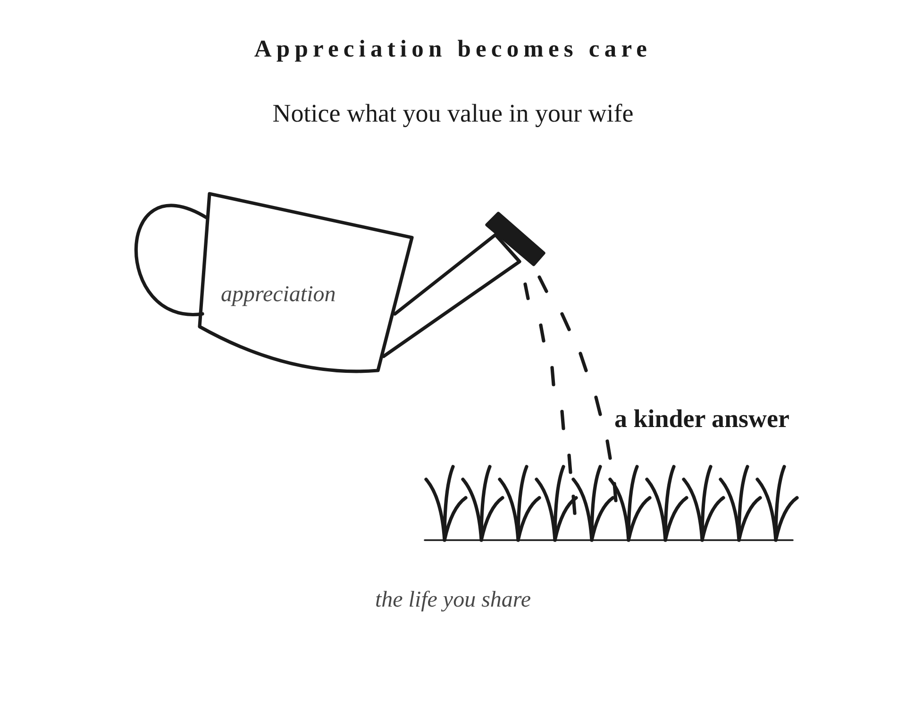

You can love your wife and struggle to name the last time you stopped to enjoy something about her. You could list what needs doing around the house without stopping to think. Ask yourself what you appreciate about her today, and you might need a minute.
That pause doesn’t mean you don’t care. You notice the appointment nobody made, the expense you weren’t expecting, the habit that still annoys you. Your wife can become so familiar that you notice what bothers you about her faster than you notice her kindness.
My wife saves things I’d throw away. When the house feels junky, I’ve told her we live like hoarders. I think that sometimes hurts her feelings. There’s a balance, and some things do need clearing out. Other times, what she kept is exactly what we need, and we don’t have to buy it again. She has saved us a lot of money by reusing things and keeping them around.
“Hoarder” is the harsh word. The word I much prefer is thrifty. It’s the same trait either way, and what I’m paying attention to picks the word. After a long stretch of nothing but work and family duty, every small thing is like nails on a chalkboard. My wife gets very anxious when we’re late or things are behind schedule. That’s just who she is, and I’ve learned to accept it. It can be annoying, but so can being late in her eyes.
She’s getting gray hairs. She doesn’t want other people to see them. I love them. She was a powerful attorney and a vice president at a public company. For about three years she’s been on sabbatical, a break from her career, to be a full-time mother. Her income has changed. Her body has changed. Mine has too. When she’s working in the garden in shorts and a T-shirt, I find her incredibly attractive, and that’s enough. She is enough for me.
I see her most clearly when I’m rested and have time with her as my friend. The other day we went to breakfast, with no kids and no deadline to race toward. We talked about the new house we’re building, what my oldest son needs for college, and the chores we had that week. I noticed how nice it was to just be with each other and talk through shared goals.
Name something true about her, and stay with it long enough to remember why you value it. You don’t need to improve her in your imagination before you can appreciate her in your life.
My kids complain a lot about dinner. Then it’s their turn to cook, and they find out how much work it is. They didn’t appreciate what they had until they saw what it cost. In a 2014 classroom study, Froh and colleagues taught children aged eight to eleven to notice what a helper meant, what it cost and what it gave them. The children became more grateful. My wife cooks all the time, so she already knows what a meal costs. That’s why she says the best meals are the ones you don’t have to cook.
A meal someone made for you can be enough on its own. We see what we wanted and miss what went into it. I don’t complain about dinner, because I’ve learned firsthand how hard her job is. That gave me perspective. Anything she makes is enough for me.
Spouses compare, husbands and wives both, often without noticing. On social media you see only what other people post, and you compare it piece by piece with your whole life. Life on the other side of the fence can look better. You meet someone who’s funny, and suddenly your wife’s humor is under review. Someone else catches your eye, and whatever you noticed becomes a new condition your wife has to meet. What you have starts to feel like it isn’t enough.
Men tend to think a life beyond their wife is better. For some, maybe that’s true. But many of them have never been with the woman of their dreams, so it’s just a dream. Schkade and Kahneman found in 1998 that students in the Midwest and in California were equally satisfied with life, yet both groups expected Californians to be happier, because they fixed on the weather. Nobody asked them about marriage, but we do the same: we fix on the one thing someone else has, and let it decide the comparison.
It runs both ways. You’d want her to remember the whole of you, and she’d want the same from you. When either of you catches yourself comparing, you can say so kindly.
In Letter 16, the Roman Stoic Seneca wrote to his friend Lucilius: “Natural desires are limited; but those which spring from false opinion can have no stopping-point.” You can put Seneca’s test to what you want from her: can it stop at any definite point? If your wife met today’s condition, would you let yourself enjoy her? Or would you find the next thing she lacks?
Your wife doesn’t need to win another comparison before you treat her with affection.
The Stoic philosopher Marcus Aurelius offers a practice in Meditations VI.48: “When thou wishest to delight thyself, think of the virtues of those who live with thee.”
Give your mind an actual task: recall something worth being glad about.
This is the discipline of enough: practicing appreciation for the real person you’ve chosen. You don’t have to wait until you’re restless to begin.
In a 2003 paper reporting three studies, psychologists Robert Emmons and Michael McCullough had people write down what they were grateful for. The people who listed them reported better well-being than comparison groups on several measures, though not all. It wasn’t a study of marriages, but it’s a reason to practice on purpose.
Before you go to bed, write down one thing you valued about your wife that day. Her patience with a child. Her excitement about something she’s learning. Choose what you actually noticed, rather than qualities a good wife is supposed to have.
If nothing comes to mind, you haven’t failed. Pay attention tomorrow. And if you’re upset with her, you don’t have to pretend the hurt disappeared. There may still be something you appreciate alongside it.
My family borrowed a gesture from the movie Avatar: a fingertip to the forehead and the words “I see you.” At every meal, I thank the kids and I thank her. I think the thanks can land as hollow, like an “I love you” said with nothing behind it. A quick thanks isn’t the same as appreciation.
Then let some of what you wrote down reach her. In 2019, Visserman and colleagues found in daily studies of couples that partners often missed each other’s sacrifices, and the missed ones stirred no gratitude. Tell her what you saw and why it mattered to you. Be specific enough that she knows you paid attention. A wife who has stepped back from a career may miss feeling important, part of a team, or valued by peers. Hearing what you see in her can help.
You can also enjoy things about her that do nothing for you. You get to love a person whose life includes more than meeting your needs.
“The grass is greener where you water it” is a saying I keep coming back to. I don’t know who first said it. It turns the old line about the other side of the fence around. Your attention and care are the water. What grows is your enjoyment of the woman already there. That can look like a kinder answer, a sincere compliment, or time spent enjoying her company. Keep doing that on ordinary days, before dissatisfaction makes it feel urgent.
Talk with her because you like talking to her.
None of this requires her to answer your affection on your schedule. If she’s tired or distracted when you tell her, what you said is still true. You can be glad she’s your wife and still feel hurt when you reach for her and hear no. What you decide is how to treat her while you feel it.
Contentment doesn’t replace a conversation that needs to happen. If you’d still resent it two days later, it isn’t small, and Chapter 11 covers what to do. You can love who she is while taking a problem seriously.
Most of your marriage happens in ordinary hours: a meal, a walk, a question about your day, the thing she saved that turns out to be exactly what you need. They don’t feel like much while you’re in them. They are the life you chose. Slow down enough to taste them.
Thankfulness is how you keep wanting what you already have.

Putting into Practice
Mechanism: Appreciation becomes care
The idea in one sentence: You practice the concept of enough by noticing what you value in your wife and letting that appreciation change how you care for her.
Familiarity makes complaints easy to notice. The same trait can get a harsh word or a loving one, and your attention picks the word. Complaints come easily when you overlook what went into something, like a meal someone made for you. The author stopped complaining about dinner once he learned firsthand how hard her job is; what you can borrow is noticing what a meal cost. Comparison adds conditions a real person cannot keep meeting. A life beyond your wife can look better, but many men have never been with the woman of their dreams, so it’s just a dream. Name something you value about the woman your wife is now. Tell her specifically, since quick thanks isn’t appreciation, and let it become care on ordinary days. Gratitude leaves room for honest concerns. It asks for no particular response from her.
Lesson: Contentment grows through practiced attention and appreciation for the real person you chose.
Challenge: Name one thing you appreciate about your wife today and tell her why it matters to you.